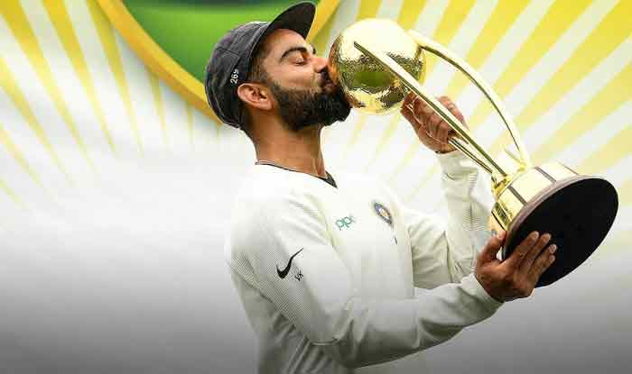
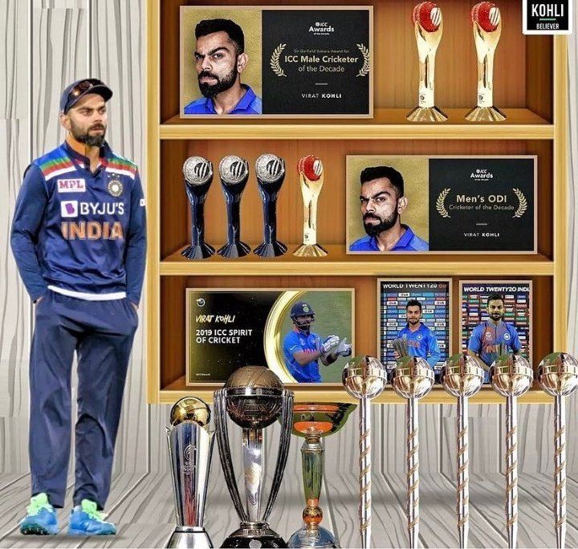
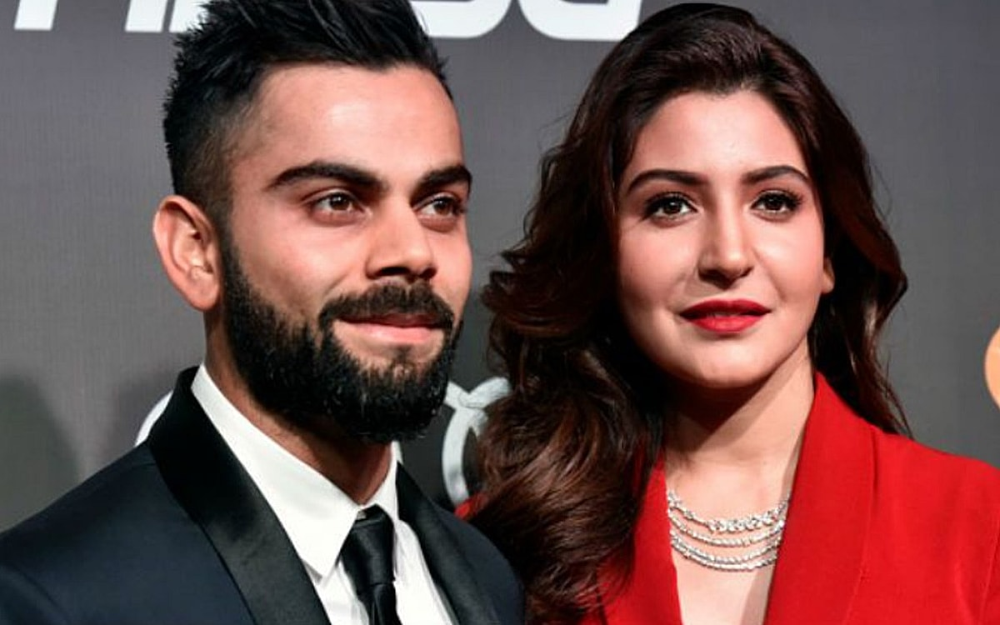
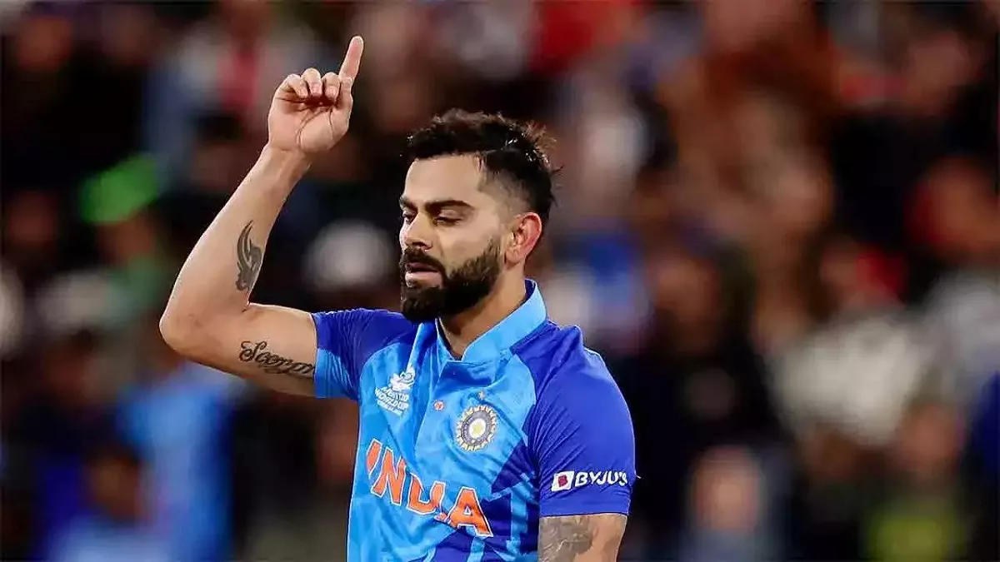
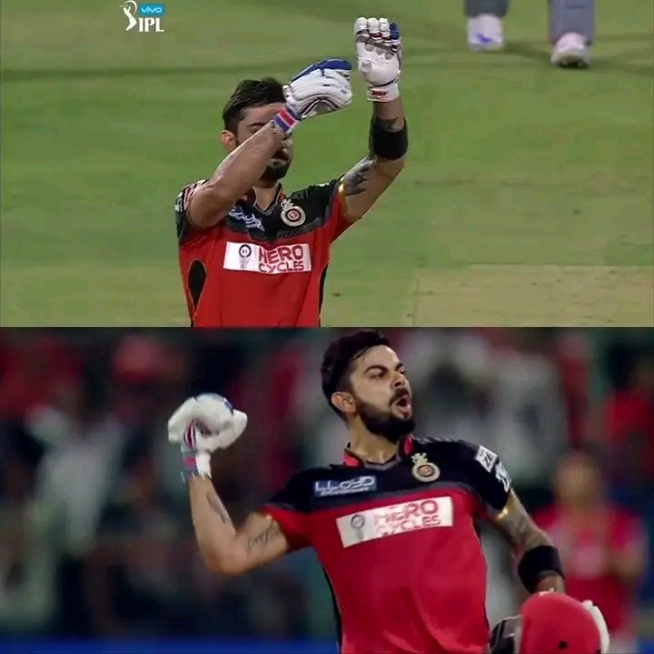
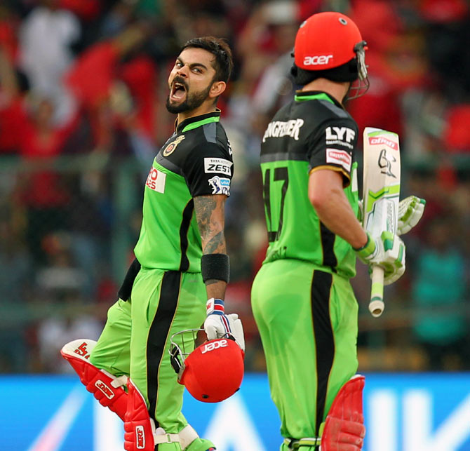

Virat Kohli - The Run Machine
Virat Kohli born on 5 November 1988 is an Indian international cricketer and the former captain of the Indian national cricket team. Widely regarded as one of the greatest batsmen in the history of the sport, he plays for Royal Challengers Bangalore in the IPL.
Achivements
- Virat Kohli, the Indian cricketer and former captain, has been given several nicknames by fans and fellow players due to his exceptional cricketing skills and personality. Some of the popular nicknames associated with Virat Kohli include:King Kohli, Chiku, Run Machine, SuperV, Chase Master, Captain Fearless, G.O.A.T. (Greatest of All Time).
- Kohli has also contributed to India's successes, including winning the 2011 World Cup and the 2013 Champions trophy.
- In February-March 2008, Kohli assumed the captaincy of the Indian squad that went on to triumph at the 2008 Under-19 Cricket World Cup held in Malaysia.
- Virat Kohli is the only Indian batsman who got 890 rating points in the ICC ODI ranking.
- He scored six double centuries as a captain in test matches.
- Kohli scored 973 runs in the ninth edition of the Indian Premier League to guide his team to the finals of the tournament.
- In 2017, Kohli slammed 11 centuries across all formats of the game and amassed 3000 runs. As a captain, he led India to new heights, winning all the series at home.
- Virat Kohli's batting record in Test cricket: Innings - 187; Runs - 8,676; Average - 49.30; Hundreds - 29; Fifties - 29.
- Virat Kohli's batting record in ODI cricket: Matches - 275; Runs - 13,776; Average - 57.30; Hundreds - 46.
- Virat Kohli's batting record in T20I cricket: Matches - 115; Runs - 4,008; Average - 52.70; Hundreds - 1.
- Virat Kohli's batting record in IPL cricket: Matches - 237; Runs - 7,263; Hundreds - 7.
- He struck an unbeaten 82 from 51 balls in India's must-win group match against Australia in "an innings of sheer class" with "clean cricket shots".It helped India win by six wickets and register a spot in the semi-final.
- Return to form: Kohli made a resurgence of his form during the Asia Cup 2022, Over the course of the tournament, he amassed a total of 276 runs with an average of 92.The highlight of his performance was his maiden T20I century against Afghanistan, a knock that saw him score 122 runs from 61 deliveries, it was his first century in 1020 days.
- Kohli played out an,iconic innings against Pakistan in the T20 World Cup 2022.His 82* off 53 balls turned out to one of his best T20I knocks played in his career.
Awards
- Garfield Sobers Trophy (ICC Cricketer of the Year): 2017, 2018.
- ICC ODI Player of the Year: 2012, 2017, 2018.
- ICC Test Team of the Year: 2017 (captain).
- ICC Spirit of Cricket: 2019.
- ICC ODI Team of the Year: 2012, 2014, 2016 (captain), 2017 (captain), 2018 (captain), 2019 (captain).
- ICC Test Team of the Year: 2017 (captain), 2018 (captain), 2019 (captain).
- Padma Shri: 2017.
- Arjuna Award: 2013.
- Rajiv Gandhi Khel Ratna: 2018.
- Sir Garfield Sobers Award for ICC Men's Cricketer of the Decade(2010-2020).
- He won the awards for Male cricketer of the decade and ODI cricketer of the decade.
- Virat won the 'Man of the Tournament' awards twice in the tournament. He won in 2014 (319 runs) and 2016 (273 runs), becoming the only player to do so.
- Delhi & District Cricket Association (DDCA) renamed a stand after Virat Kohli at Feroz Shah Kotla, Delhi.
Photos






“Whatever You Want To Do, Do It With Full Passion, And Work Really Hard Towards It. Don't Look Anywhere Else”.
-Virat Kohli